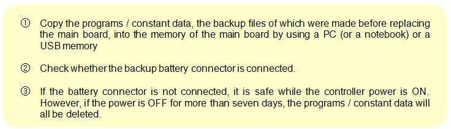

Separation of Boards
Please be aware of the above cautions, and make a replacement of board following the below instructions.
Insert of Board

![순서도: 대체 처리: ① Be sure to turn power off before working.
② Keep your hands clean to prevent boards from being stained with oils or water. If you need to grasp the board, please hold around the board. Be sure not to touch the contacting surface of electric parts or pattern, and especially connector.
③ Align the electric potential between the body (hand) of the user and the controller.
④ Each board has a number of connectors. Be sure to insert completely to prevent false inserting, omission, or looseness when replacing. Match the printed names on the nameplate of connector and on the one of boards.](images/image278.jpg)
![순서도: 대체 처리: ① If the main board needs to be replaced, backup files of programs / constant data should be first made by using the HR-VIEW S/W of a PC (or a notebook) or a USB memory before replacing it.
② Since the teaching-program / constant data is stored in SRAM of main board, the previous program / constant data you want is not existed after replacement.
③ After replacement, load the backup contents to the new board before using. Program/constant data remains in SRAM by the battery for backup even when power is removed.
④ Besides, in a case in which the connectors of a battery for backup have been separated by mistake or because of the replacement of the board, the capacitor for backup maintains programs / constant data for up to about seven days. The battery for backup must be connected to keep the board for long period of time because program/constant data may be deleted afterwards.](images/image281.jpg)
![순서도: 대체 처리: ① First, remove input power from power unit.
② Loosen slightly the screw upholding the supporting stand which is above and below of Rack, move the supporting stand to the left, and pull it out.
③ Take all the connectors out of board. Here, for the connector connected by screws, loosen them by using a suitable screwdriver. And be careful of excessive force to connector.
④ Pull out the Ejector mounted on the upper and lower front side of board and the board will be taken out along the guide rail of Rack.](images/image282.jpg)
![순서도: 대체 처리: ① First, turn off the input power of power unit.
② Push inward the Ejector mounted on the upper and lower front side of board along the guide rail of Rack. Here, push it hard until you feel that the connector is inserted into backplane board which is located in the back side of Rack.
③ Connect all the connectors of the board. Here, for the connector connected by screws, tighten it again by using a suitable screwdriver.
④ Move the supporting stand to the right, hooking up to the screw on the upper and lower part of Rack, and then tighten the screw.](images/image283.jpg)